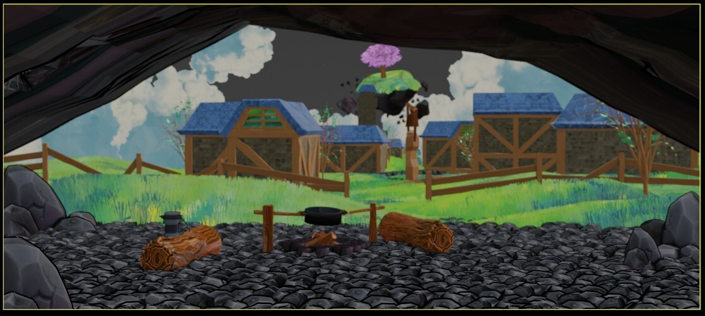

Stylized Cave & Town
This project is a stylized 3D environment created in a low–poly aesthetic. The focus was to blend warm lighting, playful color palettes, and simple geometry to build a cozy cave and town scene that feels alive without relying on high–detail assets.
I explored different lighting setups, composition options, and camera angles to highlight depth and storytelling. The scene was modeled and assembled with an emphasis on modular pieces that could be reused across different shots.
This work reflects my interest in environment design and stylized worlds, combining technical workflows with cinematic framing and mood–driven direction.

